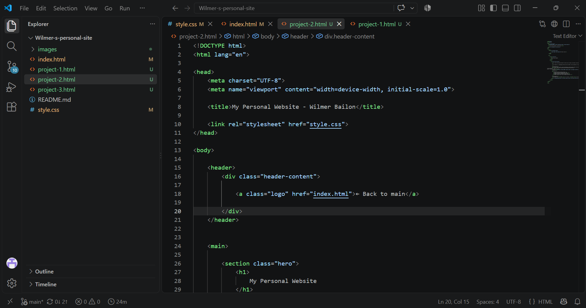

Hi! I built this personal website to share my work, projects, and ideas in one place. I wanted a simple portfolio where I could present what I’m creating and keep my work organized in a clean, easy-to-navigate format.
This website is a lightweight portfolio built with HTML, CSS, and JavaScript. It gives me a space to showcase my projects, explain what I’m working on, and share my contact information with visitors.
Installation
To run this website locally, clone the repository, open the project folder, and start a local web server:
git clone https://github.com/your-username/your-portfolio.git
cd your-portfolio
python -m http.server 8000Then open http://localhost:8000 in your browser.
Features
- Clean and minimal portfolio layout.
- Project cards with individual detail pages.
- Responsive design for different screen sizes.
- Contact section with GitHub and email links.
- Simple structure that is easy to update and maintain.
Technologies
This website uses HTML for structure, CSS for design and layout, and JavaScript for interactivity. The project is intentionally simple and lightweight so it remains easy to customize and expand over time.
